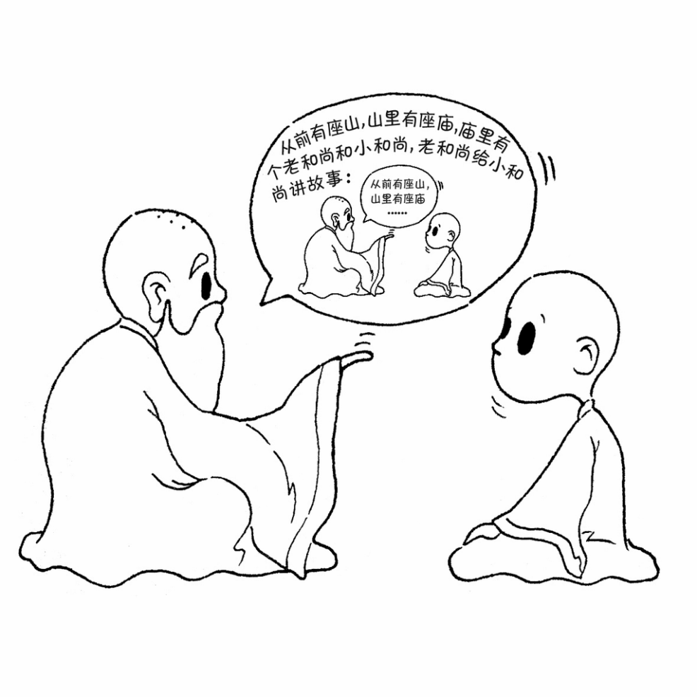

我们知道地球和一些其他行星围绕着太阳旋转，也知道在一个原子中，有许多电子围绕着原子核旋转。我曾经想象，我们的太阳系也许是一个更大世界里的一个原子，地球只是围绕着太阳原子的一个电子。而我身上的每个原子又是一个星系，原子核就是这个星系中的恒星，电子是围绕着恒星旋转的行星。一个电子中也许还包含了另一个宇宙，虽然这个宇宙还不能被显微镜看到，但我相信它的存在。
也许这个想法有些异想天开，但在程序设计中，也有一些和“事物是由相似的子事物构成”类似的思想。组合模式就是用小的子对象来构建更大的对象，而这些小的子对象本身也许是由更小的“孙对象”构成的。